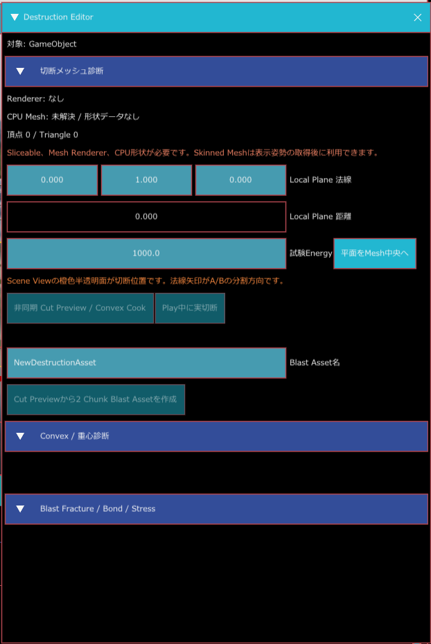

破壊（切断・破砕・斬撃・風船）
モデルを実行中に切る、事前に割っておいた破片を爆発や衝突でばらばらにする、剣で切る、風船を割る、といった表現を作る部品のまとめです。部品は 6 種類あり、音や演出、破裂の設定は「破壊材質」というファイルで共有します。このページでは組み合わせ方と試し方を説明します。各項目の既定値・範囲・C# API は 破壊系リファレンス にまとめています。
- 物理：物をぶつける、爆弾を落とす（コード不要）
- Destruction Editor の試験ボタン：Play中に実切断、Play中にBlast Damageを試す（コード不要）
- C# スクリプト：
BeginSwing()、Slice()、ApplyRadialDamage()、Explode()、Pop()など
こんなときに使う
- 剣やレーザーが通った位置でモデルを切り分けたいとき（Sliceable ＋ 斬撃）
- 爆発や衝突で、壁・柱・岩をばらばらに崩したいとき（Destructible ＋ 破壊する側）
- 浮かんで揺れ、つつくと割れて、近くの風船も連鎖で割れる風船を置きたいとき（風船）
- 壊れたときに、音・粉塵・火花・カメラの揺れ・衝撃波を出したいとき（破壊材質の組み込み演出）
- 割れると周りを巻き込んで爆発する樽を作りたいとき（破壊材質の破裂）
- 増えた破片を、時間やシーン内の数で自動で片付けたいとき（破片の寿命）
部品の組み合わせ
| 作りたいもの | 壊される側に付ける | 壊す側に付ける |
|---|---|---|
| 剣で切れる物 | Mesh・Skinned・Primitive のどれかの Renderer ＋ Sliceable | 刃の GameObject に 斬撃。振るときにスクリプトで BeginSwing() |
| 爆弾で崩れる壁 | Mesh Renderer ＋ Box Collider ＋ Destructible（Destruction Asset を割り当て） | Rigidbody ＋ Collider ＋ 破壊する側（接触時に爆発） |
| 物をぶつけると壊れる像 | Mesh Renderer ＋ Collider ＋ Destructible（衝突で壊れる） | 重めの Rigidbody ＋ Collider。確実に壊したいなら 破壊する側 も |
| 浮かぶ風船 | Sphere などの形 ＋ Rigidbody（動的）＋ Sphere Collider ＋ 風船 | 斬撃、破壊する側、爆発、ぶつかる物のどれか |
| 割れると爆発する樽 | Destructible ＋ 破壊材質（破壊時に破裂、破裂爆発半径） | 何でも（最初の 1 回を壊せばよい） |
| 破片の片付け | 破片の寿命が破片に自動で付きます。時間は Sliceable / Destructible の「破片の寿命（秒）」などで決めます | |
何が何に効くかの一覧は 破壊系リファレンス：何が何に効くか を見てください。破壊する側と爆発は Sliceable には効きません。Sliceable を切れるのは、斬撃・スクリプトの Slice()・Destruction Editor の試験ボタンだけです。
試す前の準備
- 新しいシーンを作り、床を置きます。階層パネルの + 作成 > 3D Object > Cube で作って平たく広げ（例：拡大率 20, 0.2, 20）、Box Collider を付けます。Rigidbody を付けなければ動かない床になります。
- 切る・割る物はモデルファイル（
.glbなど）で用意し、プロジェクトパネルからシーンビューへドラッグして置きます。Mesh Renderer の付いた GameObject ができます。 - 床から少し浮かせて置き、シーンのカメラから見える位置にします。
試し方 1：Sliceable をエディターだけで切る
コード不要。Destruction Editor の試験ボタンで、実行中のモデルを平面で切ります。
- 置いたモデルを階層パネルで選び、インスペクターの コンポーネントを追加 > Destruction > Sliceable を付けます。
- Window > Destruction Editor を開きます。「切断メッシュ診断」に緑色で「候補があります」と出れば切れます。
- Local Plane 法線 と Local Plane 距離 を変えて、シーンビューの橙色の半透明の面を切りたい位置に合わせます（法線 0, 1, 0 なら水平に切ります）。
- （任意）非同期 Cut Preview / Convex Cook を押すと、切った結果の三角形数などが出ます。失敗すると理由が出ます。
- F5 で実行し、階層パネルで同じ GameObject を選んで Play中に実切断 を押します。
- 「実切断:」の行に「切断完了」と出て、モデルが 2 つに分かれて床へ落ちます。もう一度押すと、選んでいる方をさらに切れます（0.15 秒の Cooldown と、最大破片数 32 まで）。
- 新しくできた方の破片は、15 秒たつか、止まってから 6 秒で小さく縮んで消えます。元の方は残ります（消したいときは「切断元も破片として削除」をオン）。
動くキャラクター（Skinned Mesh Renderer）も同じ手順で切れます。そのときに表示されている姿勢で固まった破片になります。
試し方 2：ボロノイで割ったアセットを、爆発で崩す
コード不要。モデルを事前に細かく割って Destruction Asset を作り、Destructible で崩します。
- 閉じた形のモデルを置き、Sliceable を一時的に付けます（ボロノイ分割は Sliceable から形を読むため）。
- Destruction Editor の ボロノイ分割 で レベル1の破片数（例：12）を決め、ボロノイ分割をプレビュー を押します。
- 「破片数 / Bond / 体積誤差」が出て、シーンビューに水色の線で展開図（破片を少し離して描いた図）が出ます。割れ方を変えたいときは 乱数シード、衝撃点（ローカル） と 衝撃点周辺の細かさ を変えてもう一度プレビューします。
- プロジェクトパネルで保存先のフォルダーを開き、「切断メッシュ診断」の Blast Asset名 に名前（例：
Rock_Fracture）を入れて、プレビュー結果を破壊 Asset に保存 を押します。プロジェクトパネルに.replaydestructionが増えます。 - インスペクターで Sliceable を削除し、コンポーネントを追加 > Destruction > Destructible を付けて、Destruction Asset に今のファイルを割り当てます。
- F5 で実行し、同じ GameObject を選んで、Destruction Editor の「Blast Fracture / Bond / Stress」にある Play中にBlast Damageを試す を押します（既定は半径 2、Damage 10）。
- 対象の中心から半径 2 の中のつながりが切れ、破片のかたまりが床へ落ちます。
試し方 3：玉をぶつけて壊す
コード不要。試し方 2 の Destructible に、上から玉を落とします。
- Destructible の GameObject に Box Collider を付けます（玉を受け止め、衝突を受け取るため）。
- 階層パネルの + 作成 > 3D Object > Sphere で玉を作り、Destructible の真上 3〜5 m に置いて、Sphere Collider と Rigidbody（種別は動的）を付けます。
- 次のどちらかで試します。
- 衝突で壊す：玉の Rigidbody の 質量 を 50 にします。Destructible の「衝突で壊れる」は既定でオンです。
- 破壊する側で壊す：玉に コンポーネントを追加 > Destruction > 破壊する側 を付けます。質量は 1 のままで構いません。
- F5 で実行します。玉が当たった所が崩れます。
「衝突で壊れる」の Damage は、(衝撃 − 衝撃しきい値 150) × 衝撃ダメージ倍率 0.05 です。衝撃は「近づく速さ × 質量」なので、質量 1 の玉を 5 m から落とした程度（約 10）ではしきい値に届きません。軽い物で壊したいときは、衝撃しきい値を下げます。破壊する側は速さや重さに関係なく、触れるたびに接触Damage（既定 200）を与えます。
試し方 4：爆弾で崩し、周りも巻き込む
コード不要。試し方 3 の玉を爆弾にします。
- 玉の 破壊する側 で 接触時に爆発 をオンにします。
- Destructible の近く（5 m 以内）に、別の Destructible や、次の試し方 5 の風船、ただの Rigidbody の箱を置いておきます。
- F5 で実行します。玉が Destructible に触れた瞬間に爆発し、半径 5 m の中の Destructible に Damage（中心で 300）、風船を割り、動的な Rigidbody を外へ押し出します。玉の GameObject は消えます。
接触時に爆発するのは、Destructible か風船に触れたときだけです。床に落ちても爆発しません。スクリプトから好きなときに爆発させるには Explode() を呼びます。
試し方 5：風船を浮かべて割る
コード不要。
- 階層パネルの + 作成 > 3D Object > Sphere で作り、Sphere Collider、Rigidbody（動的）、コンポーネントを追加 > Destruction > 風船 を付けます。色は Primitive Mesh Renderer の 色 で変えられます（割れたときのゴム片も同じ色になります）。
- これを 1 m ほど離して 4〜5 個並べます（Ctrl+D で複製）。
- 風船の上 3 m ほどに、「針」にする小さな Cube を置き、破壊する側 を付けます。Collider や Rigidbody は要りません。
- 連鎖を見たいときは、全部の風船の 連鎖圧力 を 1 にします（既定の 0.2 だと、近くで 5 回割れないと連鎖しません）。
- F5 で実行します。風船がふらふら揺れながら上がり、針の 0.5 m 以内に入った風船が割れます。連鎖圧力が 1 なら、破裂半径（2.5 m）の中の風船が、近い順に 0.05 秒ずつ遅れて次々に割れます。
試し方 6：斬撃で切る
斬撃は実行を始めると判定がオフに戻るので、BeginSwing() を呼ぶ短いスクリプトが 1 つ要ります。ここでは刃を Rotator で回して、周りのモデルを水平に切ります。
- 試し方 1 の Sliceable のモデルを用意します。
- 空の GameObject「Blade」を作り、モデルと同じ位置で、切りたい高さに置きます。
- Blade に コンポーネントを追加 > Gameplay > Rotator を付け、回転速度 を 360 にします（回転軸は 0, 1, 0 のまま）。
- Blade に コンポーネントを追加 > Destruction > 斬撃 を付け、刃の根元 を 0, 0, 0、刃の先端 を 2, 0, 0 にします。刃が横向きに回るので、先端の速さは約 12.6 m/秒になり、既定の最低速度 3 を超えます。
- 刃を見えるようにしたいときは、Blade の子に細長い Cube（位置 1, 0, 0、拡大率 2, 0.05, 0.05）を置きます。自分の子は切らない設定（自分の親子を無視）なので、切られません。
- プロジェクトパネルで Create > Script > C# Script から
SwingOnStartを作り、次のように書いて Blade に付けます。using ReplayEngine; namespace Game; [ReplayGuid("（作ったときの値をそのまま使う）")] public class SwingOnStart : MonoBehaviour { bool started; void Update() { if (started) return; var blade = GetComponent<BladeSlicer>(); if (blade != null) { blade.BeginSwing(); // 最初のフレームで振り始める started = true; } } } - F5 で実行します。刃が通った高さでモデルが水平に切れ、上の部分がずり落ちます。
1 回の振り（BeginSwing() から EndSwing() まで）では、同じ対象は 1 回だけ、合わせて 4 個まで（1振りの対象上限）切ります。剣のように振るたびに切りたいときは、振り始めに BeginSwing()、振り終わりに EndSwing() を呼びます（Scripts/SwordClash/SwordClashFighter.cs が実例です）。刃の通り道にある風船は割れ、Destructible には「先端の速さ × 斬撃Damage倍率」の Damage が入ります。
試し方 7：破壊材質で音・演出・破裂を付ける
破壊材質を付けないと、音も演出も出ません（破片が落ちるだけです）。
- プロジェクトパネルの何もない所を右クリックし、Create > Data > 破壊材質 で作ります。
- 作ったファイルを選ぶと、プロジェクトパネルに「破壊材質 Asset」の編集欄が出ます。組み込み演出 を開き、演出スタイル を「爆発」、破片を赤熱発光 をオンにします。
- 破裂 を開き、破壊時に破裂 をオン、破片の外向き速度 を 6、破裂爆発半径 を 4、破裂爆発Damage を 100 にします。
- 試し方 2 の Destructible の 破壊材質 にこのファイルを割り当てます。近くにもう 1 つ Destructible を置いておきます。
- F5 で実行し、Play中にBlast Damageを試す を押します。爆発の演出とカメラの揺れ・衝撃波が出て、赤く光る破片が勢いよく飛び、近くの Destructible も巻き込まれて崩れます。
破壊音・切断音・VFX Prefab も同じ編集欄で指定できます。衝撃波が出ないときは、Project Settings > レンダリング / 上限 > 衝撃波の歪みを有効にする を確かめます。各項目は 破壊系リファレンス：破壊材質 を見てください。
試し方 8：C# から切る・壊す
Sliceable と Destructible は、ScriptBehaviour から TryGetComponent で取り出して使います。次の例は、実行して 2 秒後に、付けた GameObject を切るか壊します。
using ReplayEngine;
namespace Game;
[ReplayGuid("（作ったときの値をそのまま使う）")]
public class BreakAfterDelay : ScriptBehaviour
{
float timer;
bool done;
public override void Update(float deltaTime)
{
if (done) return;
timer += deltaTime;
if (timer < 2.0f) return;
if (TryGetComponent<SliceableComponent>(out var sliceable))
{
// ワールドの水平な面（y = 1）で切る。受け付けられるまで毎フレーム試す
if (sliceable.Slice(new Vector3(0.0f, 1.0f, 0.0f), 1.0f) == RuntimeStatus.Ok)
done = true;
}
else if (TryGetComponent<DestructibleComponent>(out var destructible))
{
destructible.ApplyRadialDamage(Transform.Position, 3.0f, 50.0f);
done = true;
}
}
}Slice() が RuntimeStatus.Ok を返しても、それは「受け付けた」という意味です。破片は別スレッドで作られ、あとのフレームでシーンに出ます。断られた理由は sliceable.StatusMessage() で読めます。
風船が割れたことは、MonoBehaviour でも受け取れます。シーンのどの風船が割れても呼ばれます。
void OnBalloonPopped(BalloonPoppedInfo balloon)
{
Log("風船が割れた。ゴム片 " + balloon.ScrapCount + " 個");
}カメラの揺れと衝撃波は、ScriptBehaviour の Runtime.RequestCameraShake()、Runtime.RequestShockwave() で単独でも出せます。
自動の検証で確かめる
エンジンを直したあと、破壊まわりがこわれていないかは、次の起動オプションで確かめられます（エディターは開かずに終わります）。結果は Saved\Validation\Destruction.txt と DestructionRuntime.txt に出ます。
& ".\x64\Release\3dgp.exe" --validate-destruction-runtime
& ".\x64\Release\3dgp.exe" --validate-destruction2026-09-28 の Release ビルドでは、--validate-destruction-runtime は 79 項目すべて OK、--validate-destruction は 2 項目 NG でした（詳しく）。
Destruction Editor（試験用パネル）
Window > Destruction Editor で開く、切断と破砕を試すパネルです。階層パネルで選んでいる GameObject が対象で、何も選んでいないと「HierarchyでGameObjectを選択してください。」と出ます。パネルは 4 つの折りたたみ（切断メッシュ診断、Convex / 重心診断、ボロノイ分割、Blast Fracture / Bond / Stress）でできています。

| 折りたたみ | できること |
|---|---|
| 切断メッシュ診断 | 切れる形のデータがあるかの確認、切断面の位置合わせ（シーンビューの橙色の面）、切らずに結果を計算する Cut Preview、実行中の Play中に実切断、Cut Preview から 2 Chunk の Destruction Asset を作る |
| Convex / 重心診断 | Convex Collider の状態、Cut Preview 後の重心・体積・質量 |
| ボロノイ分割 | モデルを細胞のような形に割るプレビュー（シーンビューに水色の展開図）と、Destruction Asset への保存 |
| Blast Fracture / Bond / Stress | Destructible の Chunk・Bond・物理のかたまりの数と Bond の一覧、実行中の Play中にBlast Damageを試す |
各項目の既定値と説明は 破壊系リファレンス：Destruction Editor パネル にあります。
うまくいかないとき
「」の中の文は、Destruction Editor の「実切断:」の行や、C# の StatusMessage() で見られる文です。
| 症状・出る文 | 確かめること |
|---|---|
| 「SliceableにはStatic Mesh・Skinned Mesh・Primitive Meshのどれかを1つ設定してください。」 | Mesh・Skinned・Primitive の Renderer のうちどれか 1 つだけを付けます（2 つ以上付いているときも出ます）。 |
| 「描画側のStatic Mesh読み込みを待っています。」 | モデルの読み込み中です。少し待ってからもう一度。 |
| 「切断エネルギーがCut resistanceに達していません。」 | 斬撃なら刃を速く振るか切断エネルギー倍率を上げる。スクリプトなら Slice() の切断エネルギーを上げる。または切断抵抗（破壊材質があればそちら）を下げる。 |
| 「切断Cooldown中です。」「Max fragment countに達しました。」 | 切断Cooldown（0.15 秒）を待つ。破片の数が最大破片数（32）に達しています。 |
| 「Runtime切断のConvex Physicsには ATLAS_PHYSICS backendが必要です。」 | 破片の当たり判定を実行中に作るため、物理エンジンが ATLAS_PHYSICS のシーンで、実行中に試します。編集中には切れません。 |
| 「DestructibleにはMesh・Skinned・PrimitiveのいずれかのRendererが必要です。」 | 同じ GameObject に Renderer を付けます。 |
| 「指定した破壊材質Assetを解決できません。…」 | 破壊材質のファイルが消えたか移動しています。割り当て直します。 |
| ボロノイ分割のボタンが押せない | 対象に Sliceable を一時的に付けます。 |
| 「分割失敗: …」 | 閉じていないメッシュです。穴のない単純な形で試します。 |
| ぶつけても Destructible が壊れない | Destructible 側に Collider があるか、ぶつける物が動的な Rigidbody か、衝撃（速さ × 質量）が衝撃しきい値 150 を超えているかを確かめます。 |
| 破壊する側を当てても Sliceable が切れない | 仕様です。破壊する側と爆発は Destructible と風船にだけ効きます。 |
| 風船が浮かない | Rigidbody の種別が動的か、浮力が 1 より大きいかを確かめます。 |
| 風船がぶつかっても割れない | 衝撃しきい値が 0 だと、ぶつかっても割れません。 |
| 斬撃で切れない | BeginSwing() を呼んでいるか（インスペクターで「斬撃判定中」をオンにしても、実行開始でオフに戻ります）、先端の速さが最低速度（3 m/秒）を超えているか、刃の通り道が対象を横切っているか、1振りの対象上限に達していないかを確かめます。 |
| 音・演出が出ない | 破壊材質が無いか、演出スタイルが「なし」です。「破壊演出を自動再生」「切断演出を自動再生」がオンかも確かめます。 |
| 破片がすぐ消える、または残りすぎる | 「破片の寿命（秒）」「静止後の削除時間（秒）」「シーン内の最大破片数」を調整します。 |
| 重い | 最大破片数・レベル1の破片数・動的Actor上限を下げます。破片ごとに当たり判定の計算が起きます。 |